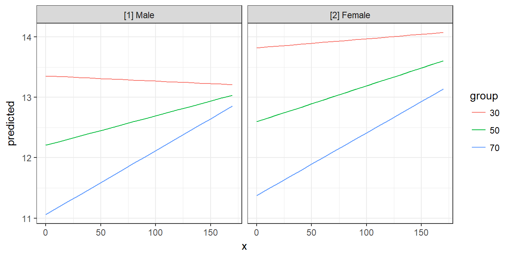
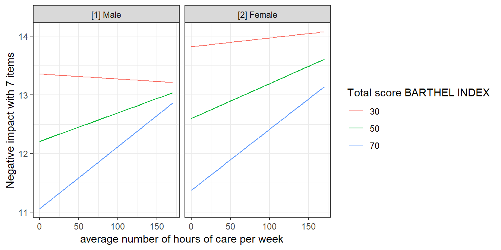
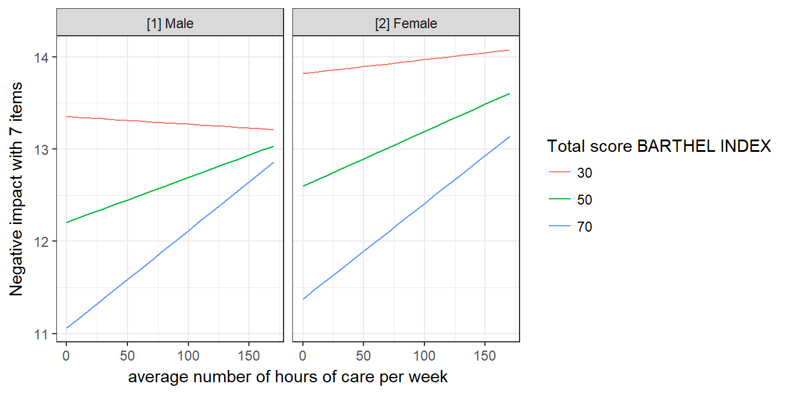
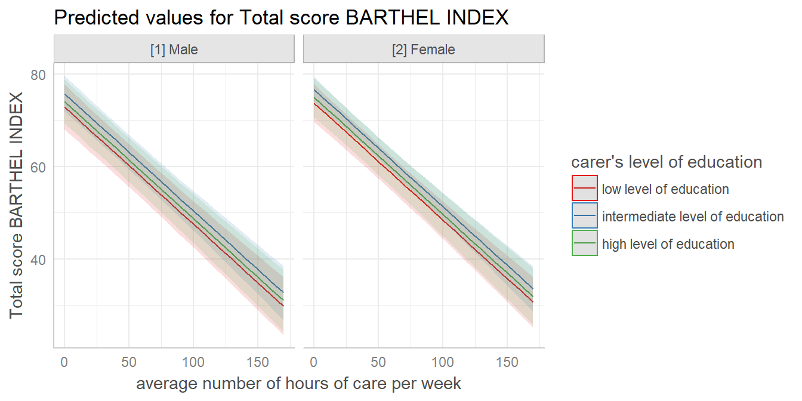

Tidy Data Frames of Marginal Effects
Daniel Lüdecke
2018-05-17
Source:vignettes/marginaleffects.Rmd
marginaleffects.RmdAim of the ggeffects-package
The aim of this package is similar to the broom-package: transforming “untidy” input into a tidy data frame, especially for further use with ggplot. However, ggeffects does not return model-summaries; rather, this package computes marginal effects at the mean or average marginal effects from statistical models and returns the result as tidy data frame (as tibbles, to be more precisely).
Since the focus lies on plotting the data (the marginal effects), at least one model term needs to be specified for which the effects are computed. It is also possible to compute marginal effects for model terms, grouped by the levels of another model’s predictor. The package also allows plotting marginal effects for two- or three-way-interactions, or for specific values of a model term only. Examples are shown below.
Consistent and tidy structure
The returned data frames always have the same, consistent structure and column names, so it’s easy to create ggplot-plots without the need to re-write the arguments to be mapped in each ggplot-call. x and predicted are the values for the x- and y-axis. conf.low and conf.high could be used as ymin and ymax aesthetics for ribbons to add confidence bands to the plot. group can be used as grouping-aesthetics, or for faceting.
Marginal effects at the mean
ggpredict() computes predicted values for all possible levels and values from a model’s predictors. In the simplest case, a fitted model is passed as first argument, and the term in question as second argument:
library(ggeffects)
data(efc)
fit <- lm(barthtot ~ c12hour + neg_c_7 + c161sex + c172code, data = efc)
ggpredict(fit, terms = "c12hour")
#> # A tibble: 18 x 5
#> x predicted conf.low conf.high group
#> <dbl> <dbl> <dbl> <dbl> <fct>
#> 1 0 75.4 73.3 77.6 1
#> 2 10 72.9 70.9 74.9 1
#> 3 20 70.4 68.6 72.2 1
#> 4 30 67.8 66.1 69.5 1
#> 5 40 65.3 63.7 67.0 1
#> 6 50 62.8 61.1 64.4 1
#> 7 60 60.2 58.5 62.0 1
#> 8 70 57.7 55.8 59.6 1
#> 9 80 55.2 53.1 57.3 1
#> 10 90 52.6 50.3 55.0 1
#> 11 100 50.1 47.5 52.7 1
#> 12 110 47.6 44.7 50.4 1
#> 13 120 45.0 41.9 48.2 1
#> 14 130 42.5 39.1 45.9 1
#> 15 140 40.0 36.3 43.7 1
#> 16 150 37.4 33.4 41.5 1
#> 17 160 34.9 30.6 39.2 1
#> 18 170 32.4 27.7 37.0 1The output shows the predicted values for the response at each value from the term c12hour. The data is already in shape for ggplot:
library(ggplot2)
theme_set(theme_bw())
mydf <- ggpredict(fit, terms = "c12hour")
ggplot(mydf, aes(x, predicted)) + geom_line()
Marginal effects at the mean for different groups
The terms-argument accepts up to three model terms, where the second and third term indicate grouping levels. This allows predictions for the term in question at different levels for other model terms:
ggpredict(fit, terms = c("c12hour", "c172code"))
#> # A tibble: 54 x 5
#> x predicted conf.low conf.high group
#> <dbl> <dbl> <dbl> <dbl> <fct>
#> 1 0 74.7 71.3 78.2 low level of education
#> 2 0 75.5 73.3 77.6 intermediate level of education
#> 3 0 76.2 72.8 79.5 high level of education
#> 4 10 72.2 68.9 75.5 low level of education
#> 5 10 72.9 71.0 74.9 intermediate level of education
#> 6 10 73.7 70.4 76.9 high level of education
#> 7 20 69.7 66.5 72.9 low level of education
#> 8 20 70.4 68.6 72.2 intermediate level of education
#> 9 20 71.1 67.9 74.3 high level of education
#> 10 30 67.1 64.0 70.3 low level of education
#> # ... with 44 more rowsCreating a ggplot is pretty straightforward: the colour-aesthetics is mapped with the group-column:
mydf <- ggpredict(fit, terms = c("c12hour", "c172code"))
ggplot(mydf, aes(x, predicted, colour = group)) + geom_line()
Finally, a second grouping structure can be defined, which will create another column named facet, which - as the name implies - might be used to create a facted plot:
mydf <- ggpredict(fit, terms = c("c12hour", "c172code", "c161sex"))
mydf
#> # A tibble: 108 x 6
#> x predicted conf.low conf.high group facet
#> <dbl> <dbl> <dbl> <dbl> <fct> <fct>
#> 1 0 74.0 69.4 78.6 low level of education [1] Male
#> 2 0 75.0 71.4 78.6 low level of education [2] Female
#> 3 0 74.7 71.1 78.3 intermediate level of education [1] Male
#> 4 0 75.7 73.3 78.1 intermediate level of education [2] Female
#> 5 0 75.4 71.0 79.7 high level of education [1] Male
#> 6 0 76.4 72.9 80.0 high level of education [2] Female
#> 7 10 71.4 66.9 75.9 low level of education [1] Male
#> 8 10 72.5 69.0 75.9 low level of education [2] Female
#> 9 10 72.1 68.6 75.7 intermediate level of education [1] Male
#> 10 10 73.2 71.0 75.4 intermediate level of education [2] Female
#> # ... with 98 more rows
ggplot(mydf, aes(x, predicted, colour = group)) +
geom_line() +
facet_wrap(~facet)
Marginal effects for each model term
If the term argument is either missing or NULL, marginal effects for each model term are calculated. The result is returned as a list, which can be plotted manually (or using the plot() function).
mydf <- ggpredict(fit)
mydf
#> [[1]]
#> # A tibble: 18 x 5
#> x predicted conf.low conf.high group
#> <dbl> <dbl> <dbl> <dbl> <fct>
#> 1 0 75.4 73.3 77.6 1
#> 2 10 72.9 70.9 74.9 1
#> 3 20 70.4 68.6 72.2 1
#> 4 30 67.8 66.1 69.5 1
#> 5 40 65.3 63.7 67.0 1
#> 6 50 62.8 61.1 64.4 1
#> 7 60 60.2 58.5 62.0 1
#> 8 70 57.7 55.8 59.6 1
#> 9 80 55.2 53.1 57.3 1
#> 10 90 52.6 50.3 55.0 1
#> 11 100 50.1 47.5 52.7 1
#> 12 110 47.6 44.7 50.4 1
#> 13 120 45.0 41.9 48.2 1
#> 14 130 42.5 39.1 45.9 1
#> 15 140 40.0 36.3 43.7 1
#> 16 150 37.4 33.4 41.5 1
#> 17 160 34.9 30.6 39.2 1
#> 18 170 32.4 27.7 37.0 1
#>
#> [[2]]
#> # A tibble: 21 x 5
#> x predicted conf.low conf.high group
#> <dbl> <dbl> <dbl> <dbl> <fct>
#> 1 7 75.9 73.2 78.6 1
#> 2 8 73.6 71.2 75.9 1
#> 3 9 71.3 69.2 73.3 1
#> 4 10 69.0 67.1 70.8 1
#> 5 11 66.7 65.0 68.4 1
#> 6 12 64.4 62.7 66.0 1
#> 7 13 62.1 60.4 63.8 1
#> 8 14 59.8 57.9 61.7 1
#> 9 15 57.5 55.3 59.7 1
#> 10 16 55.2 52.7 57.7 1
#> # ... with 11 more rows
#>
#> [[3]]
#> # A tibble: 2 x 5
#> x predicted conf.low conf.high group
#> <dbl> <dbl> <dbl> <dbl> <fct>
#> 1 1 64.0 60.6 67.3 1
#> 2 2 65.0 63.1 66.9 1
#>
#> [[4]]
#> # A tibble: 3 x 5
#> x predicted conf.low conf.high group
#> <dbl> <dbl> <dbl> <dbl> <fct>
#> 1 1 64.1 61.0 67.1 1
#> 2 2 64.8 63.1 66.4 1
#> 3 3 65.5 62.3 68.7 1
#>
#> attr(,"class")
#> [1] "ggeffectslist" "list"Average marginal effects
ggaverage() compute average marginal effects. While ggpredict() creates a data-grid (using expand.grid()) for all possible combinations of values (even if some combinations are not present in the data), ggaverage() computes predicted values based on the given data. This means that different predicted values for the outcome may occure at the same value or level for the term in question. The predicted values are then averaged for each value of the term in question and the linear trend is smoothed accross the averaged predicted values. This means that the line representing the marginal effects may cross or diverge, and are not necessarily in paralell to each other.
mydf <- ggaverage(fit, terms = c("c12hour", "c172code"))
ggplot(mydf, aes(x, predicted, colour = group)) + geom_line()
Marginal effects at specific values or levels
The terms-argument not only defines the model terms of interest, but each model term that defines the grouping structure can be limited to certain values. This allows to compute and plot marginal effects for terms at specific values only. To define these values, put them in square brackets directly after the term name. Ranges are specified with colon: terms = c("c12hour [30:80]", "c172code [1,3]")
mydf <- ggpredict(fit, terms = c("c12hour [30:80]", "c172code [1,3]"))
mydf
#> # A tibble: 12 x 5
#> x predicted conf.low conf.high group
#> <int> <dbl> <dbl> <dbl> <fct>
#> 1 30 67.1 64.0 70.3 low level of education
#> 2 30 68.6 65.4 71.8 high level of education
#> 3 40 64.6 61.6 67.7 low level of education
#> 4 40 66.1 62.9 69.2 high level of education
#> 5 50 62.1 59.0 65.1 low level of education
#> 6 50 63.5 60.3 66.7 high level of education
#> 7 60 59.5 56.5 62.6 low level of education
#> 8 60 61.0 57.7 64.3 high level of education
#> 9 70 57.0 53.9 60.1 low level of education
#> 10 70 58.5 55.1 61.8 high level of education
#> 11 80 54.5 51.3 57.7 low level of education
#> 12 80 55.9 52.4 59.5 high level of education
ggplot(mydf, aes(x, predicted, colour = group)) + geom_line()
This is especially useful when variables are, for instance, log-transformed. ggpredict() then typically only uses the range of the log-transformed variable, which is in most cases not what we want. In such situation, specify the range in the terms-argument.
data(mtcars)
mpg_model <- lm(mpg ~ log(hp), data = mtcars)
# x-values and predictions based on the log(hp)-values
ggpredict(mpg_model, "hp")
#> # A tibble: 22 x 5
#> x predicted conf.low conf.high group
#> <dbl> <dbl> <dbl> <dbl> <fct>
#> 1 3.95 57.9 49.4 66.3 1
#> 2 4.13 57.4 49.0 65.8 1
#> 3 4.17 57.3 48.9 65.6 1
#> 4 4.19 57.2 48.9 65.6 1
#> 5 4.51 56.4 48.2 64.6 1
#> 6 4.53 56.4 48.2 64.5 1
#> 7 4.55 56.3 48.2 64.5 1
#> 8 4.57 56.3 48.1 64.4 1
#> 9 4.65 56.1 48.0 64.2 1
#> 10 4.69 56.0 47.9 64.1 1
#> # ... with 12 more rows
# x-values and predictions based hp-values from 50 to 150
ggpredict(mpg_model, "hp [50:150]")
#> # A tibble: 11 x 5
#> x predicted conf.low conf.high group
#> <int> <dbl> <dbl> <dbl> <fct>
#> 1 50 30.5 27.9 33.1 1
#> 2 60 28.6 26.4 30.8 1
#> 3 70 26.9 25.0 28.8 1
#> 4 80 25.5 23.8 27.1 1
#> 5 90 24.2 22.8 25.7 1
#> 6 100 23.1 21.8 24.4 1
#> 7 110 22.0 20.8 23.2 1
#> 8 120 21.1 20.0 22.3 1
#> 9 130 20.2 19.1 21.4 1
#> 10 140 19.4 18.3 20.6 1
#> 11 150 18.7 17.5 19.9 1Two- and Three-Way-Interactions
To plot the marginal effects of interaction terms, simply specify these terms in the terms-argument.
library(sjmisc)
data(efc)
# make categorical
efc$c161sex <- to_factor(efc$c161sex)
# fit model with interaction
fit <- lm(neg_c_7 ~ c12hour + barthtot * c161sex, data = efc)
# select only levels 30, 50 and 70 from continuous variable Barthel-Index
mydf <- ggpredict(fit, terms = c("barthtot [30,50,70]", "c161sex"))
ggplot(mydf, aes(x, predicted, colour = group)) + geom_line()
Since the terms-argument accepts up to three model terms, you can also compute marginal effects for a 3-way-interaction.
To plot the marginal effects of interaction terms, simply specify these terms in the terms-argument.
# fit model with 3-way-interaction
fit <- lm(neg_c_7 ~ c12hour * barthtot * c161sex, data = efc)
# select only levels 30, 50 and 70 from continuous variable Barthel-Index
mydf <- ggpredict(fit, terms = c("c12hour", "barthtot [30,50,70]", "c161sex"))
ggplot(mydf, aes(x, predicted, colour = group)) +
geom_line() +
facet_wrap(~facet)
Polynomial terms and splines
ggpredict() also works for models with polynomial terms or splines. Following code reproduces the plot from ?splines::bs:
library(splines)
data(women)
fm1 <- lm(weight ~ bs(height, df = 5), data = women)
dat <- ggpredict(fm1, "height")
ggplot(dat, aes(x, predicted)) +
geom_line() +
geom_point()Labelling the data
ggeffects makes use of the sjlabelled-package and supports labelled data. If the data from the fitted models is labelled, the value and variable label attributes are usually copied to the model frame stored in the model object. ggeffects provides various getter-functions to access these labels, which are returned as character vector and can be used in ggplot’s lab()- or scale_*()-functions.
-
get_title()- a generic title for the plot, based on the model family, like “predicted values” or “predicted probabilities” -
get_x_title()- the variable label of the first model term interms. -
get_y_title()- the variable label of the response. -
get_legend_title()- the variable label of the second model term interms. -
get_x_labels()- value labels of the first model term interms. -
get_legend_labels()- value labels of the second model term interms.
The data frame returned by ggpredict() or ggaverage() must be used as argument to one of the above function calls.
get_x_title(mydf)
#> [1] "average number of hours of care per week"
get_y_title(mydf)
#> [1] "Negative impact with 7 items"
ggplot(mydf, aes(x, predicted, colour = group)) +
geom_line() +
facet_wrap(~facet) +
labs(
x = get_x_title(mydf),
y = get_y_title(mydf),
colour = get_legend_title(mydf)
)
plot()-method
If you don’t want to write your own ggplot-code, ggeffects has a plot()-method with some convenient defaults, which allows quickly creating ggplot-objects. plot() has only a few arguments to keep this function small and simple. For instance, ci allows you to show or hide confidence bands (or error bars, for discrete variables), facets allows you to create facets even for just one grouping variable, or colors allows you to quickly choose from some color-palettes, including black & white colored plots. Use rawdata to add the raw data points to the plot.
data(efc)
efc$c172code <- to_label(efc$c172code)
fit <- lm(barthtot ~ c12hour + neg_c_7 + c161sex + c172code, data = efc)
# facet by group
dat <- ggpredict(fit, terms = c("c12hour", "c172code"))
plot(dat, facet = TRUE)
# don't use facets, b/w figure, w/o confidence bands
plot(dat, colors = "bw", ci = FALSE)

# for three variables, automatic facetting
dat <- ggpredict(fit, terms = c("c12hour", "c172code", "c161sex"))
plot(dat)
# categorical variables have errorbars
dat <- ggpredict(fit, terms = c("c172code", "c161sex"))
plot(dat)